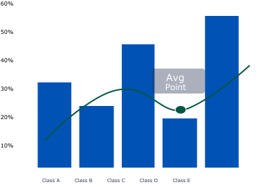

Selamat Datang,
Aidil Fitra kelas SI-3F NIM: 24220168.jpg.jpg)
Selamat Datang, Aidil Fitra
Kamu memiliki Statistik, 3 Progres Kelas, 4 Aktifitas Selanjutnya dan 3 Lampiran Dokumen yang ada pada aplikasi ini.
Statistik Mahasiswa

Progres Kelas
Matakuliah A — 78 Pendaftar
Matakuliah B — 30 Pendaftar
Matakuliah C — 40 Pendaftar
Matakuliah D — 10 Pendaftar
Aktifitas Selanjutnya
Senin, 1 November 2025 — Perkuliahan Daring 1
Selasa, 2 November 2025 — Perkuliahan Daring 1
Rabu, 3 November 2025 — Perkuliahan Daring 1
Kamis, 4 November 2025 — Perkuliahan Daring 1
Lampiran Dokumen
Lampiran dokumen tugas dan materi.
- Lampiran Dokumen 1 — Matakuliah A | Tugas Bersama Perkuliahan Daring | Lihat Dokumen
- Lampiran Dokumen 2 — Matakuliah B | Tugas Bersama Perkuliahan Daring | Lihat Dokumen
- Lampiran Dokumen 3 — Matakuliah C | Tugas Bersama Perkuliahan Daring | Lihat Dokumen